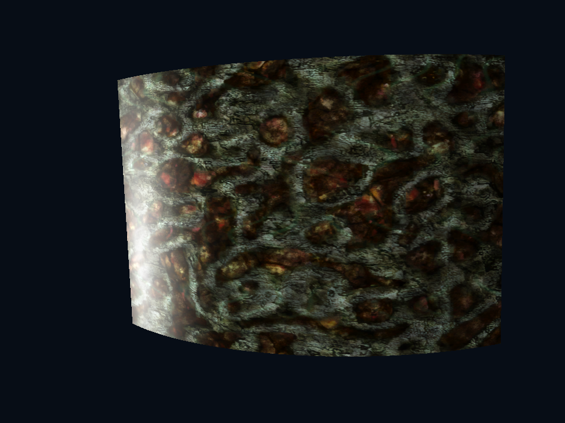
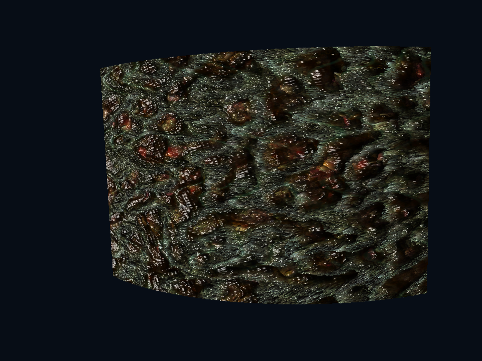
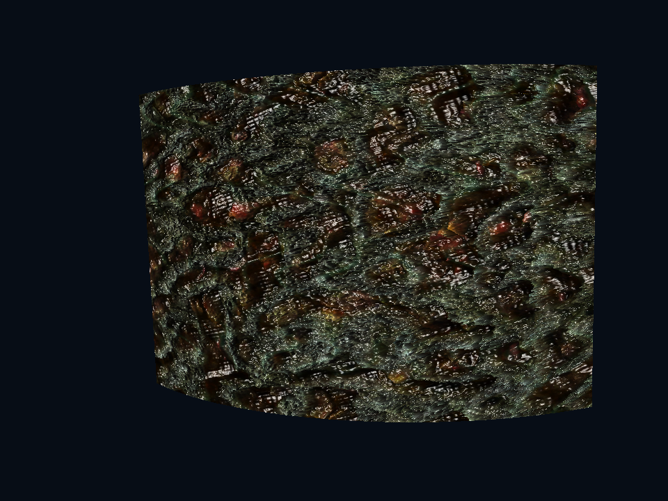
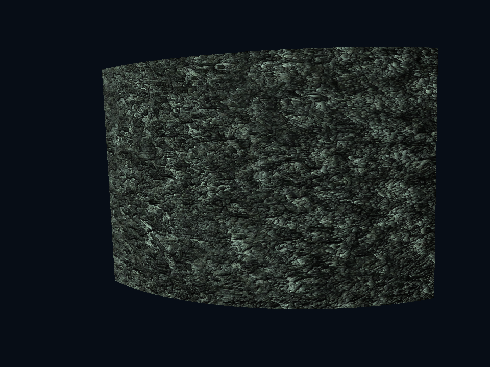
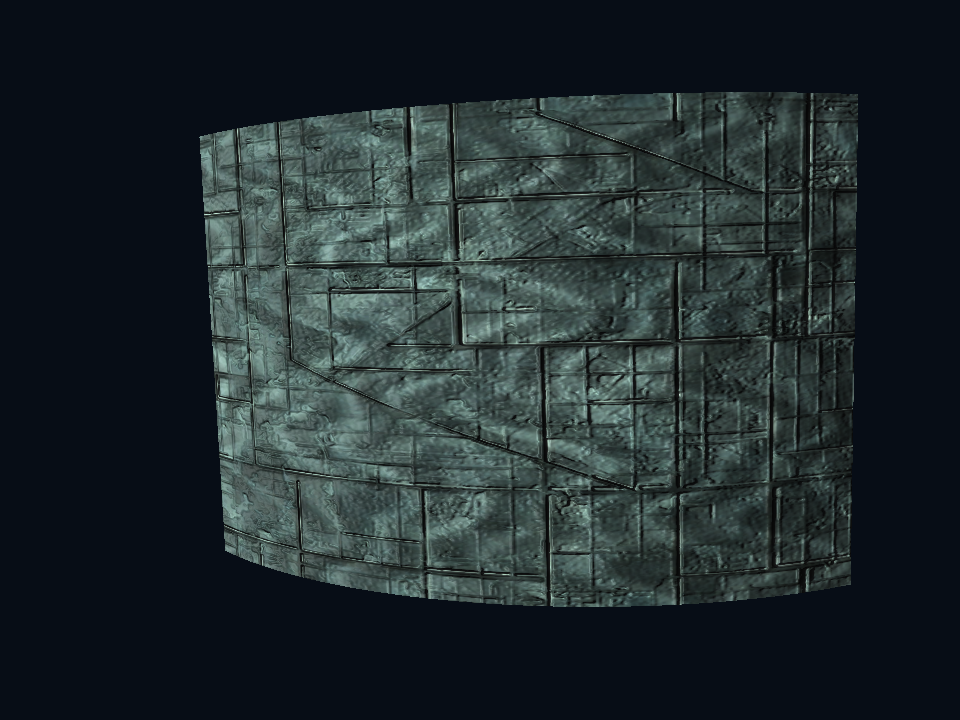

Реальные кадры D3D9/SM3 с исходными текстурами мода на изогнутом образце материала. Это лабораторный просмотр шейдера, не скриншоты миссии. Контроль слева использует тот же свет и материал с нулевой силой рельефа.
Внутри — параллакс впадин, складки, узкие мокрые блики и сохранённая illumination-текстура. Снаружи — матовая порода. Dyson использует облегчённый вариант без параллаксного поиска и выборок теней.




